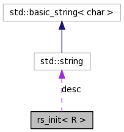

Main Page
Related Pages
Classes
Files
Class List
Class Index
Class Hierarchy
Class Members
rs_init< R > Struct Template Reference
Collaboration diagram for rs_init< R >:

[
legend
]
List of all members.
Public Member Functions
rs_init
(R m, R B, R s, R r, R A, const std::string &d)
bool
operator<
(const
rs_init
&rs) const
Public Attributes
R
mag
R
rescale_B
R
rescale_s
R
rescale_r
R
rescale_A
std::string
desc
template<typename R>
struct rs_init< R >
The documentation for this struct was generated from the following file:
model_params.hpp
All
Classes
Files
Functions
Variables
Generated by
1.6.2
 1.6.2
1.6.2